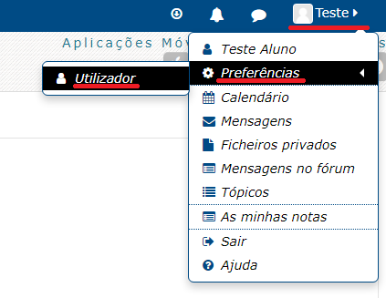
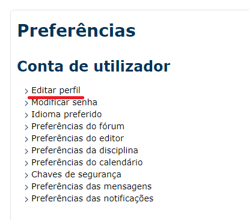
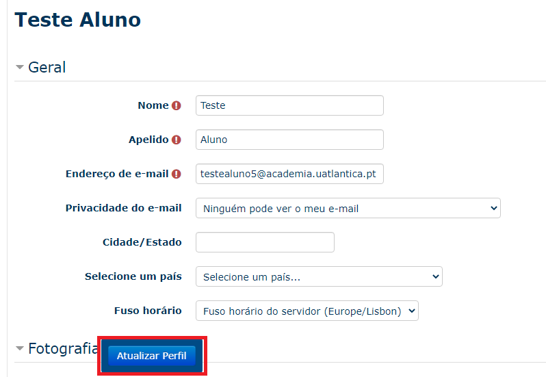
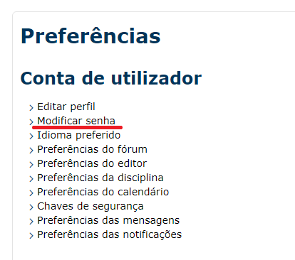
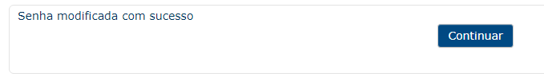
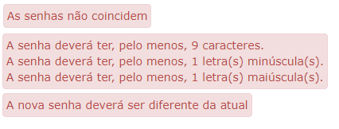

Conta do Utilizador¶
Nota
Esta documentação aplica-se para ambas as plataformas Moodle (Atlântica e ESSATLA)
Acesso¶
Para aceder ao Moodle abra um navegador de internet e digite o endereço, de acordo com a escola a que pertence:
Moodle da Atlântica: https://moodle.uatlantica.pt/
Moodle da ESSATLA: https://moodle.essatla.pt/
Em alternativa pode aceder à página «Campus Virtual» no site principal, e selecionar a opção «E-Learning»:
Campus Virtual Atlântica: https://www.uatlantica.pt/index.php/campus-virtual/
Campus Virtual ESSATLA: https://www.essatla.pt/index.php/campus-virtual/
Login¶
Insira as credenciais de acesso fornecidas pela Secretaria (Recebida após a matrícula) / Centro de Informática (Ao pedir um reset à password).
Aviso
Em caso de erro no acesso, contacte o Centro de Informática através do email suporte@uatlantica.pt
Após o primeiro login, serão pedidas algumas informações obrigatórias. Pode também adicionar uma fotografia de perfil.
Preencher os campos necessários e para efetuar as alterações carregar no botão «Atualizar Perfil».
Nota
No endereço de email recomenda-se utilizar o email de aluno utilizador@academia.uatlantica.pt, ou o email de docente utilizador@uatlantica.pt

Também após o primeiro acesso, deve concordar com as nossas Políticas de Cookies e fornecer o consentimento da política.
Após seguir estes passos a conta está pronta a ser utilizada. Pode também alterar o perfil e a password para uma mais memorável.
Editar Perfil¶
No Moodle pode alterar algumas configurações de utilizador como o nome, email de notificações e definições de privacidade.
Para aceder deve selecionar o nome de utilizador (no canto superior direito na página) e de seguida «Preferências» > «Utilizador».
Na nova página que abre encontra várias definições que pode alterar. Para editar as informações de perfil, selecionar a primeira opção «Editar perfil».
Após realizar as alterações desejadas, selecionar a opção «Atualizar Perfil».
Alterar Password¶
Por vezes precisamos de alterar a password, seja porque está prestes a expirar (expira a cada 6 meses) ou porque queremos escolher para uma que nós conhecemos.
Aviso
Não recomendamos a utilização de passwords que utilizam noutros serviços. Por favor escolher uma password diferente, ou manter a fornecida pelos serviços.
Para alterar a password, seguir o primeiro passo para aceder às opções de perfil («Preferências» > «Utilizador»), e desta vez selecionar a opção «Modificar senha».
Preencher com a senha atual e com a «Nova senha» duas vezes.
Nota
Ter atenção que a password deve conter no mínimo 9 caracteres, entre eles pelo menos 1 dígito, pelo menos 1 letra minúscula e pelo menos 1 letra maiúscula.
Apos concluido selecionar a opção «Guardar opções».
Caso a password seja alterada com sucesso, será apresentada a seguinte mensagem:
Caso contrário aparece um dos seguintes erros, em baixo do campo em questão:
Nota
Ao alterar a password no Moodle, esta também será alterada para o E-mail Institucional e Acesso Wi-Fi. E não será alterada a password da Secretaria Virtual.